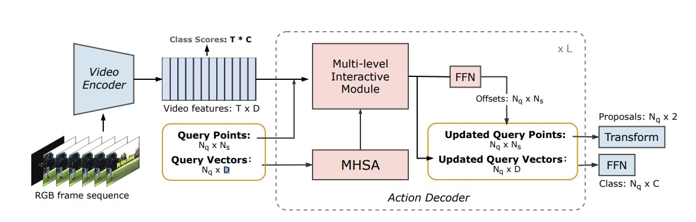
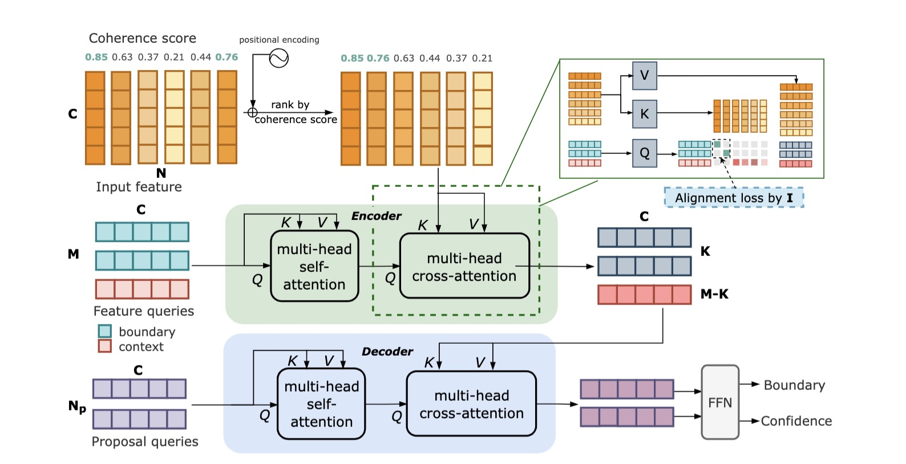
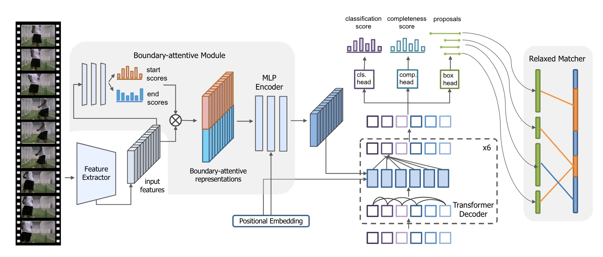

|
I am currently an M.Sc. student in the Department of Computer Science and Technology, Nanjing University, supervised by Prof. Limin Wang. Previously, I received the B.Sc. degree from Kuang Yaming Honors School, Nanjing University in 2020 (overall gpa 4.44/5, rank 3/29). |
 |
PointTAD: Multi-Label Temporal Action Detection with Learnable Query Points |
 |
Temporal Perceiver: A General Architecture for Arbitrary Boundary Detection |
 |
Relaxed Transformer Decoders for Direct Action Proposal Generation |